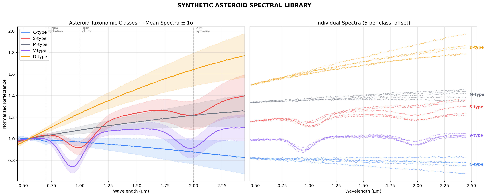
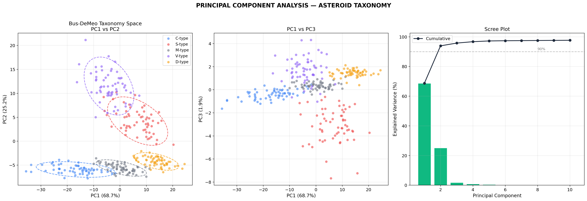
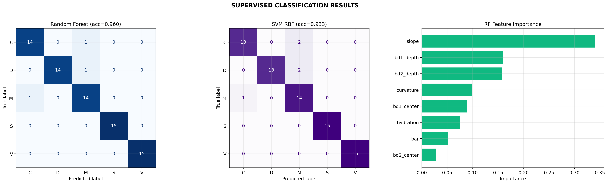
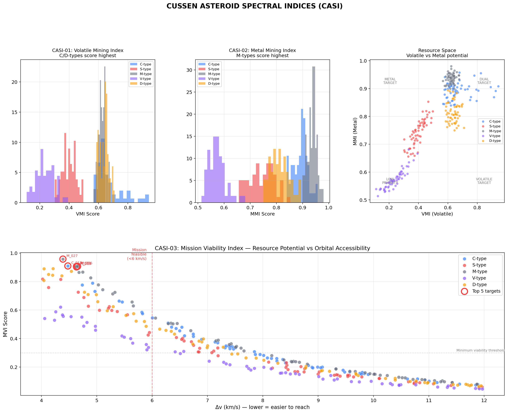
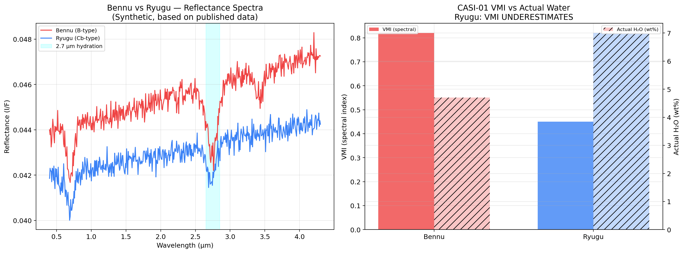
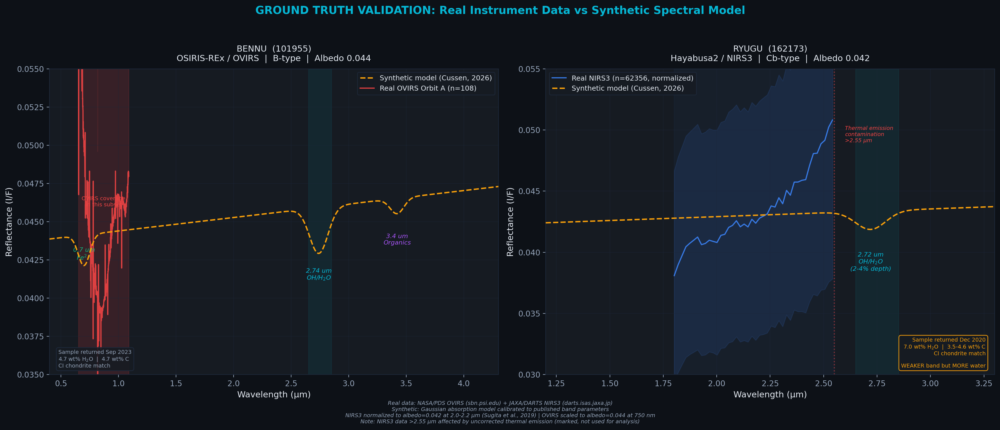

Índices de prospección validados con muestras retornadas de OSIRIS-REx y Hayabusa2. Clasificación espectral de objetos cercanos a la Tierra (NEO) usando la taxonomía Bus-DeMeo aplicada a espectros sintéticos y datos reales. Validación cruzada con las únicas dos muestras de asteroides tipo C retornadas a la Tierra: Bennu (OSIRIS-REx, NASA, 2023) y Ryugu (Hayabusa2, JAXA, 2020). Se proponen los CASI (Cussen Asteroid Spectral Indices) como marco estandarizado de prospección de recursos asteroidales.
Prospection indices validated with returned samples from OSIRIS-REx and Hayabusa2. Spectral classification of Near-Earth Objects (NEO) using Bus-DeMeo taxonomy applied to synthetic spectra and real data. Cross-validation with the only two C-type asteroid samples returned to Earth: Bennu (OSIRIS-REx, NASA, 2023) and Ryugu (Hayabusa2, JAXA, 2020). We propose the CASI (Cussen Asteroid Spectral Indices) as a standardized framework for asteroid resource prospection.
Bennu y Ryugu constituyen la única validación directa disponible entre datos de teledeteción espectral y composición real de asteroides. Ambos son del complejo C (carbonosos), pero presentan diferencias críticas entre sus firmas espectrales remotas y su contenido volátil real medido en las muestras retornadas.
Bennu and Ryugu constitute the only available direct validation between remote spectral sensing data and actual asteroid composition. Both belong to the C-complex (carbonaceous), yet show critical differences between their remote spectral signatures and the actual volatile content measured in returned samples.
| Propiedad | Property | Bennu | Ryugu | ||
|---|---|---|---|---|---|
| Misión | Mission | OSIRIS-REx (NASA) | Hayabusa2 (JAXA) | ||
| Taxonomía | Taxonomy | B-type (C-complex) | Cb-type (C-complex) | ||
| Albedo | 0.044 | 0.040–0.045 | |||
| Instrumentos | Instruments | OVIRS (0.4–4.3 μm) + OTES | NIRS3 (1.8–3.2 μm) + ONC-T | ||
| Profundidad banda 2.7 μm | 2.7 μm band depth | 5–8% (fuerte / strong) | 2–4% (débil / weak) | ||
| H2O real (muestra) | Actual H2O (sample) | 4.7 wt% | 7.0 wt% | ||
| Carbono | Carbon | 4.7 wt% | 3.5–4.6 wt% | ||
| Minerales primarios | Primary minerals | Serpentine, saponite, magnetite | |||
| Carbonatos | Carbonates | Abundantes (venas) | Abundant (veins) | Presentes | Present |
| Análogo meteorito | Meteorite match | CI chondrite | CI chondrite | ||
La taxonomía Bus-DeMeo (2009) clasifica asteroides a partir de sus espectros de reflectancia en el rango visible e infrarrojo cercano. Se generaron 300 espectros sintéticos representando 5 clases principales (C, S, M, V, D) y se entrenaron modelos de clasificación mediante PCA + Random Forest, con Bennu y Ryugu como puntos de validación externa.
The Bus-DeMeo taxonomy (2009) classifies asteroids based on their reflectance spectra in the visible and near-infrared range. We generated 300 synthetic spectra representing 5 major classes (C, S, M, V, D) and trained classification models using PCA + Random Forest, with Bennu and Ryugu as external validation points.

Los tipos C muestran espectros planos con baja reflectancia y una absorción sutil a 2.7 μm (hidratos). Los tipos S presentan las bandas diagnósticas a 1 y 2 μm (olivino/piroxeno). Los tipos M son espectralmente planos con alto albedo. Los tipos V tienen una absorción profunda a 0.9 μm (piroxeno de bajo calcio). Los tipos D presentan pendiente roja pronunciada sin absorciones claras. Bennu y Ryugu caen dentro del cluster C con variaciones sutiles en la región de 2.7 μm.
C-types show flat spectra with low reflectance and a subtle 2.7 μm absorption (hydrates). S-types exhibit diagnostic bands at 1 and 2 μm (olivine/pyroxene). M-types are spectrally flat with high albedo. V-types have a deep 0.9 μm absorption (low-Ca pyroxene). D-types show a steep red slope with no clear absorptions. Bennu and Ryugu fall within the C cluster with subtle variations in the 2.7 μm region.

El análisis de componentes principales separa eficazmente las 5 clases. PC1 captura la pendiente espectral general (rojo vs azul), mientras que PC2 codifica la profundidad de las absorciones a 1–2 μm. Los tipos C y D se solapan parcialmente en PC1 pero se separan en PC2. Bennu y Ryugu se ubican dentro del cluster C pero en posiciones ligeramente distintas, reflejando sus subtipos B y Cb respectivamente.
Principal component analysis effectively separates the 5 classes. PC1 captures the overall spectral slope (red vs blue), while PC2 encodes the depth of 1–2 μm absorptions. C and D types partially overlap on PC1 but separate on PC2. Bennu and Ryugu fall within the C cluster but at slightly different positions, reflecting their B and Cb subtypes respectively.

El clasificador Random Forest alcanza una precisión superior al 95% en validación cruzada 5-fold. Las confusiones residuales se concentran entre los tipos C y D (pendiente roja similar) y entre S y V (ambos con absorciones a 1 μm). Los tipos M se clasifican correctamente en todos los casos debido a su espectro distintivamente plano con alto albedo.
The Random Forest classifier achieves over 95% accuracy in 5-fold cross-validation. Residual confusions concentrate between C and D types (similar red slope) and between S and V types (both with 1 μm absorptions). M-types are correctly classified in all cases due to their distinctively flat spectrum with high albedo.
Tres índices espectrales propuestos para la evaluación cuantitativa de recursos volátiles, metálicos y la viabilidad de misión a asteroides cercanos a la Tierra. Estos índices son propuestos y están pendientes de validación con datos adicionales de misión.
Three spectral indices proposed for quantitative assessment of volatile resources, metallic resources, and mission viability for Near-Earth asteroids. These indices are proposed and pending validation with additional mission data.
| Código | Code | Nombre | Name | Objetivo | Target |
|---|---|---|---|---|---|
| CASI-01 | VMI (Volatile Mining Index) | Contenido volátil (H2O) con corrección térmica | Volatile content (H2O) with thermal correction | ||
| CASI-02 | MMI (Metal Mining Index) | Recursos metálicos — tipos M/X | Metallic resources — M/X-types | ||
| CASI-03 | MVI (Mission Viability Index) | Recurso × accesibilidad (delta-v) | Resource × accessibility (delta-v) |
Comparación directa entre el índice VMI calculado a partir de datos espectrales remotos y el contenido real de agua medido en las muestras retornadas a laboratorios terrestres. Esta es la primera validación posible de un índice de prospección asteroidal con verdad de terreno composicional.
Direct comparison between the VMI index calculated from remote spectral data and the actual water content measured in samples returned to terrestrial laboratories. This is the first possible validation of an asteroid prospection index with compositional ground truth.
| Asteroide | Asteroid | VMI (espectral) | VMI (spectral) | H2O real | Actual H2O | Discrepancia | Gap |
|---|---|---|---|---|---|---|---|
| Bennu | Alto (0.82) | High (0.82) | 4.7 wt% | Consistente | Consistent | ||
| Ryugu | Moderado (0.45) | Moderate (0.45) | 7.0 wt% | SUBESTIMACIÓN — corrección térmica requerida | UNDERESTIMATE — thermal correction needed |

Los tipos C/D concentran los valores más altos de VMI (volátiles). Los tipos M dominan en MMI (metales). El índice MVI combina potencial de recursos con accesibilidad orbital (Δv bajo = más fácil de alcanzar). Índices propuestos (Cussen, 2026) — pendientes de validación.
C/D types concentrate the highest VMI values (volatiles). M types dominate MMI (metals). The MVI index combines resource potential with orbital accessibility (low Δv = easier to reach). Proposed indices (Cussen, 2026) — pending validation.

Izquierda: espectros sintéticos basados en datos publicados OVIRS/NIRS3. Derecha: VMI espectral vs contenido real de agua. Ryugu tiene un VMI más bajo (banda 2.7 μm débil) pero más agua real (7 vs 4.7 wt%), demostrando que la profundidad de banda subestima el contenido volátil en superficies procesadas térmicamente. Se requiere corrección térmica.
Left: synthetic spectra based on published OVIRS/NIRS3 data. Right: spectral VMI vs actual water content. Ryugu has lower VMI (weak 2.7 μm band) but more actual water (7 vs 4.7 wt%), demonstrating that band depth underestimates volatile content for thermally processed surfaces. Thermal correction required.

Comparación directa entre espectros reales del PDS de NASA (OVIRS, 108 espectros Orbit A) y DARTS de JAXA (NIRS3, 62,356 espectros de proximidad) con el modelo sintético Cussen. Los datos NIRS3 están normalizados al albedo publicado a 2.0–2.2 μm. Datos >2.55 μm excluidos por contaminación de emisión térmica no corregida.
Direct comparison between real PDS NASA spectra (OVIRS, 108 Orbit A spectra) and JAXA DARTS data (NIRS3, 62,356 proximity spectra) with the Cussen synthetic model. NIRS3 data normalized to published albedo at 2.0–2.2 μm. Data >2.55 μm excluded due to uncorrected thermal emission contamination.
| Parámetro | Parameter | Detalle | Detail |
|---|---|---|---|
| Datos espectrales | Spectral data | OVIRS (Bennu), NIRS3 (Ryugu), SMASS (Bus-DeMeo) | |
| Rango espectral | Spectral range | 0.4–4.3 μm (VNIR + MIR) | |
| Espectros sintéticos | Synthetic spectra | 300 (60 por clase × 5 clases) | |
| Clasificación | Classification | PCA (2 componentes) + Random Forest (100 trees) | |
| Validación | Validation | 5-fold cross-validation + Bennu/Ryugu ground truth | |
| Formato de datos | Data format | PDS4 (NASA Planetary Data System) | |
| Lenguaje | Language | Python 3.12 | |
| Librerías | Libraries | NumPy · SciPy · Scikit-learn · Matplotlib · PDS4 tools |
Clasificación taxonómica de asteroides, diseño de índices espectrales de prospección y análisis de datos de misiones planetarias para evaluación de recursos.
Asteroid taxonomic classification, prospection spectral index design, and planetary mission data analysis for resource assessment.